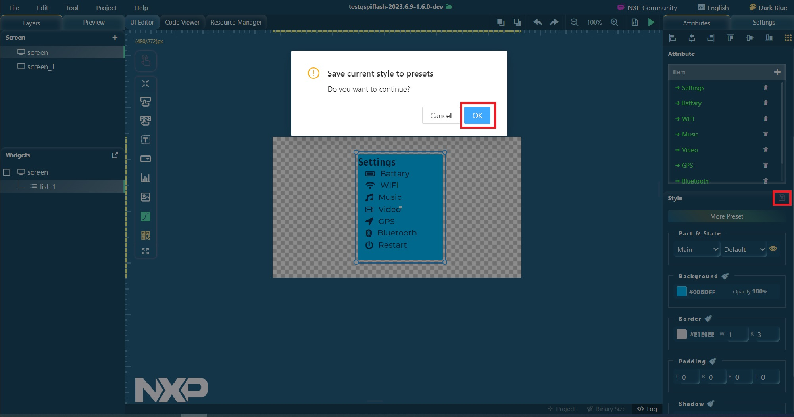

Custom style
When you want to save your own preset style for easy design, click the
OK button.
Figure: Saving preset style
You can find the custom style file at the following locations:
Windows:
%appdata%\\gui-guider\\{version}\\preset_record.setting
Ubuntu:
~/.config/gui-guider/{version}/preset_record.setting
MacOS:
~/Library/Application Support/gui-guider/{version}/preset_record.setting